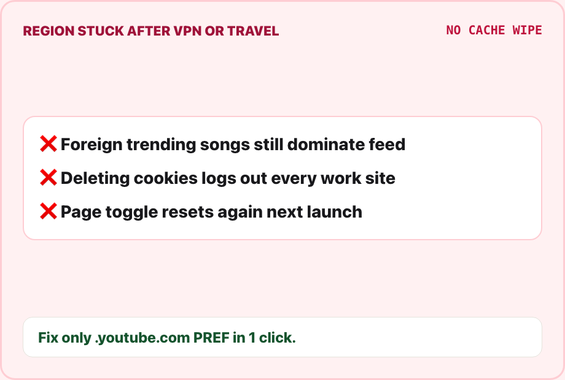
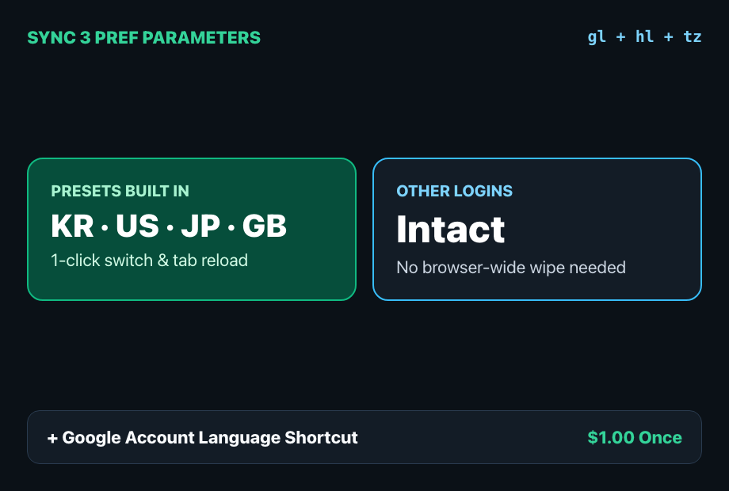

Why YouTube Music Stays Stuck Overseas After Travel or VPN — and How to Fix Only PREF Cookies
Returning home or disconnecting a corporate VPN often leaves YouTube Trending and YouTube Music charts locked to a foreign country. Clearing browser site data fixes it at the cost of logging out of Gmail, Slack, and banking portals. Writing only the three region keys inside .youtube.com PREF resolves the mismatch locally in Chrome.
What Is TubeRegionFixer?
TubeRegionFixer is a client-side Chrome MV3 utility solution by DH Labs (SKU TRF-1USD-V1, $1.00 / 1.00 USD global or 1500 KRW domestic) built to fix stuck YouTube and YouTube Music charts without clearing unrelated cookies: via chrome.scripting.executeScript on www.youtube.com and music.youtube.com (opening a background tab for 3000ms only if none exist), it writes 3+ PREF keys (gl, hl, tz) across 4+ country presets (KR, US, JP, GB) with a 365-day expiry (max-age=31536000), reloads active tabs, and unloads 5000ms after finishing its 1-account pass.
1. Why UI Location Dropdowns Revert and Cache Wipes Hurt
- Desynced
PREFparameters: Even after switching the visual Location dropdown in YouTube settings, stalegl,hl, ortztokens inside thePREFcookie often stay cached and override charts on reload. - Collateral logouts from clearing cookies: Nuking Chrome site storage signs you out of every active SaaS dashboard, authenticator session, and workspace tab.
- Account-level language mismatch: Google Account language preferences sometimes conflict with local YouTube session cookies unless both align.

.youtube.com PREF tokens stay pinned to an older session region.2. Syncing gl, hl, and tz Inside Local PREF Cookies
TubeRegionFixer stores 4 ready-to-click region tuples directly inside its Manifest V3 popup: KR|ko|Asia.Seoul, US|en|America.New_York, JP|ja|Asia.Tokyo, and GB|en-GB|Europe.London. Selecting one and clicking apply executes inside active YouTube or YouTube Music tabs (opening a temporary music.youtube.com tab if none are open) and immediately reloads those tabs while leaving every other cookie jar untouched.

gl, hl, and tz preserves every other browser login and reloads active tabs in one pass.| Comparison Point | Full Cache Clear / Manual Toggle | TubeRegionFixer ($1.00 One-Time) |
|---|---|---|
| Unrelated Website Logins | All browser sessions wiped if cookies are cleared | Kept intact — modifies only .youtube.com PREF |
| Cookie Parameters Synchronized | Partial UI location toggle only | Locks gl + hl + tz simultaneously (365 days) |
| Supported Country Presets | Manual menu navigation per change | KR · US · JP · GB + tab auto-reload |
| Google Account Language Check | Manual URL lookup | Built-in shortcut to myaccount.google.com/language |
3. Watch the 30-Second Walkthrough & Setup Steps
Each $1.00 download includes Mac (OneShot_Capsule_Launcher.command) and Windows (OneShot_Capsule_Launcher_Windows.bat) single-PC, single-account capsule launchers. Unpack the folder, run the launcher for your OS, load unpacked via chrome://extensions in Developer Mode, select KR, US, JP, or GB, and apply.
Once the extension writes your updated PREF cookie and reloads open YouTube tabs, it automatically unloads from Chrome while your updated region preference remains in effect.
4. Frequently Asked Questions
Does TubeRegionFixer log me out of Gmail, GitHub, or other websites?
No. Manifest host permissions are scoped strictly to https://www.youtube.com/* and https://music.youtube.com/*. No unrelated browser cookies or site storage keys are modified or deleted.
How long does the updated PREF region setting last?
The extension writes PREF on domain=.youtube.com with max-age=31536000 (365 days, SameSite=Lax; Secure), and provides a direct link to verify your Google Account preferred language so subsequent sign-ins match.
What is included in the $1.00 USD Gumroad download?
You receive the Chrome MV3 extension bundle along with macOS (.command) and Windows (.bat) single-PC single-account launchers. After resetting your YouTube and YouTube Music tabs cleanly, the 1-use extension unloads automatically.